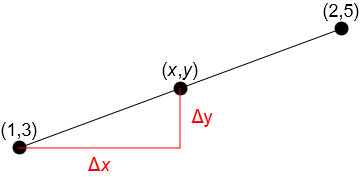

2. Basic geometry#
Much of the sophisticated mathematics that we use to model real phenomena is derived from the simpler mathematics of lines and angles. This chapter provides a brief outline of some based properties that we will rely on in other chapters.
After completing this chapter you should be able to:
use radians to measure angles, and know the relationship between radians and arc length
give definitions of sine, cosine and tangent and plot graphs of \(\sin\), \(\cos\)
state and use Pythagoras’ theorem
find the equation of the line passing through two given points
2.1. Measuring angles#
Radians are used as an alternative to degrees for measuring angles in a circle. They are almost always the best choice for mathematics due to the way that they are defined. Some commonly used mathematical results such as arc length formulae or differentiation results are only valid when the angle is measured in radians.
A radian is the angle subtended by a unit of arc inscribed on the circumference of a unit circle, as illustrated in the graphic below. An angle \(\theta\) measured in radians is typically denoted \(\theta\text{ rad}\) or with a superscript “c” in the manner \(\theta^c\).
Fig. 2.1 The definition of a radian#
Using this definition, spend a few moments thinking about an answer to the following question: “How large is 1 radian?”. Don’t use your calculator! An answer is provided below.
Solution
The circumference of a unit circle is \(2\pi\), which is a little bigger than 6. Therefore, approximately 1/6 of a circle’s circumference subtends 1 radian.
When you cut your pizza into 6 pieces (which is pretty standard), the angle of each piece is approximately 1 radian!
Since there are 360 degrees in a circle, the relationship between radians and degrees is given by:
The relationships between arc length \(s\), radius \(r\) and subtended angle \(\theta\) are captured by the following general result, which applies only if the angle is measured in radians:
The result follows from the definition of a radian and properties of similar shapes, as illustrated by the figure below.
Fig. 2.2
[left] : Arc length is proportional to subtended angle in radians, by definition.
[right]:Arc length is proportional to radius, by property of similar shapes.#
Exercise 2.1
Write down the length of an arc of a circle with radius 2cm which subtends an angle of 30 degrees
Solution
2.2. Basic trigonometry#
We now introduce the definitions of sine, cosine and tangent, which characterise the ratios of side lengths in a right-angled triangle as a function of the enclosed angle.
The definitions are illustrated in the figure below. A potentially useful mnemomic for remembering these is the pretend word “SOHCAHTOA!” which recalls the following relationships:
SOH: sin=opposite/hypothenuse
CAH: cos=adjacent/hypothenuse
TOA: tan=opposite/adjacent
Fig. 2.3 Definitions of sine, cosine and tangent, which measure the ratios of side lengths in a right-angled triangle as a function of the enclosed angle.#
Owing to the properties of similar triangles, we can investigate these relationships by inscribing a right-angled triangle inside the unit circle, so that the hypothenuse is always 1. The animation below shows how the curves for \(\sin(\theta)\) and \(\cos(\theta)\) are mapped out as the enclosed angle \(\theta\) is varied.
Fig. 2.4 An illustration of how the sine and cosine curves are mapped out by inscribing a right-angled triangle inside a unit circle. Since the hypothenuse is one, \(\cos(\theta)\) is given by the triangle base (blue) and \(\sin(\theta)\) is given by the triangle height (red).#
In general, if we take the origin of a \((x,y)\) coordinate system at the centre of the circle of radius \(r\) then we obtain the following results, where \(\theta\) is measured anti-clockwise from the positive \(x\) axis:
Negative angles
We can measure the angle in the clockwise direction by allowing it to become negative. For example, the angle \(\theta=3\pi/2\) is equivalent to \(\theta=-\pi/2\).
By convention mathematicians nearly always choose to measure angles in the range \(-\pi<\theta\leq \pi\)
2.2.1. Common results#
Students are commonly taught to memorise the angle results shown in the table below. These results are promptly forgotten, but fear not, for they are easily derived…
\(\theta\) |
\(0^c \ (=0^{\circ})\) |
\(\displaystyle \frac{\pi}{6}^c \ (=30^{\circ})\) |
\(\displaystyle \frac{\pi}{4}^c \ (=45^{\circ})\) |
\(\displaystyle \frac{\pi}{3}^c \ (=60^{\circ})\) |
\(\displaystyle \frac{\pi}{2}^c \ (=90^{\circ})\) |
|---|---|---|---|---|---|
\(\sin\) |
\(0\) |
\(\displaystyle \frac{1}{2}\) |
\(\displaystyle\frac{1}{\sqrt{2}}\) |
\(\displaystyle\frac{\sqrt{3}}{2}\) |
\(1\) |
\(\cos\) |
\(1\) |
\(\displaystyle\frac{\sqrt{3}}{2}\) |
\(\frac{1}{\sqrt{2}}\) |
\(\displaystyle\frac{1}{2}\) |
\(0\) |
\(\tan\) |
\(0\) |
\(\displaystyle\frac{1}{\sqrt{3}}\) |
\(1\) |
\(\sqrt{3}\) |
\(\infty\) |
We can find \(\cos\) and \(\sin\) of \(\pi/4\) from a right-angled triangle with unit base and height. We can find \(\cos\) and \(\sin\) of \(\pi/6\) and \(\pi/3\) from a unit equilateral triangle as illustrated in the figure below.
Fig. 2.5 Using an equilateral triangle to find cos and sine of some common angles.#
For example,
2.2.2. Pythagoras’ theorem#
The following result is a fundamental property involving the three sides of a right triangle:
The square on the hypothenuse is equal to the sum of the squares on the other two sides
For instance, if a right-triangle has base 3 and height 4, then the hypothenuse \(h\) satisfies
The theorem can be illustrated using a simple geometric argument based on the figure shown below. In the animation, the four grey right triangles are identical. In their intial positions, they form a square on the hypothenuse, which is marked in red. Rotating two of the triangles forms a square on each of the other two sides, which are marked in blue and yellow.
Since the total area is the same, we obtain the result that the red square must equal the sum of the blue and yellow squares.
Fig. 2.6 A graphical proof of Pythagoras’ theorem.#
Further discussion about Pythagoras’ theorem, and ways of demonstrating or proving it can be found in a variety of online sources such as Wikipedia
Exercise 2.2
A Pythagorean triple is a right triangle in which all three side lengths are integers. For instance, 5,12,13 is a Pythagorean triple since \(5^2+12^2=13^2\).
Show that with given two counting numbers \(a,b\) the triangle with base \((a^2-b^2)\) and height \(2ab\) forms a Pythagorean triple.
Solution
The result can be shown using algebra. Summing the squares of the two sides gives a result that is a perfect square:
For example, taking \(a=8\) and \(b=3\) gives the following Pythagorean triple:
We can also apply Pythagoras’ theorem to a right triangle with unit length hypothenuse to obtain a trigonometric identity. In that case the base of the triangle is \(\cos(\theta)\) and the height of the triangle is \(\sin(\theta)\) and so the theorem gives:
2.3. Equation of a line#
The slope of a line is a measure of its steepness. It tells us how much we have to go up (rise) for every unit that we march along (run). It is expressed as a ratio
in which \(\Delta x\) represents the “run” and \(\Delta y\) represents the “rise”, as illustrated in the figure below for the line segment between two points \((x_1,y_1)\) and \((x_2,y_2)\).
Fig. 2.7 The slope of the line segment is given by \(m=\frac{y_2-y_1}{x_2-x_1}\)#
A straight line has constant slope. Therefore the rise over run between any two points on the line is equal to the slope between two particular points.
For example, if we want to find the equation of the line between the points (1,3) and (2,5), we can first find the slope, which is given by
We then equate this to the slope between one of the given points and an arbitrary point on the line. For example, we may choose the given point (1,3) and denote a general point on the line by \((x,y)\) as shown
The equation of the line is thus given by
Exercise 2.3
Find the equation of the line that passes through the points (1,4) and (2,-2).
Give your answer in the form \(y=mx+c\),
Solution